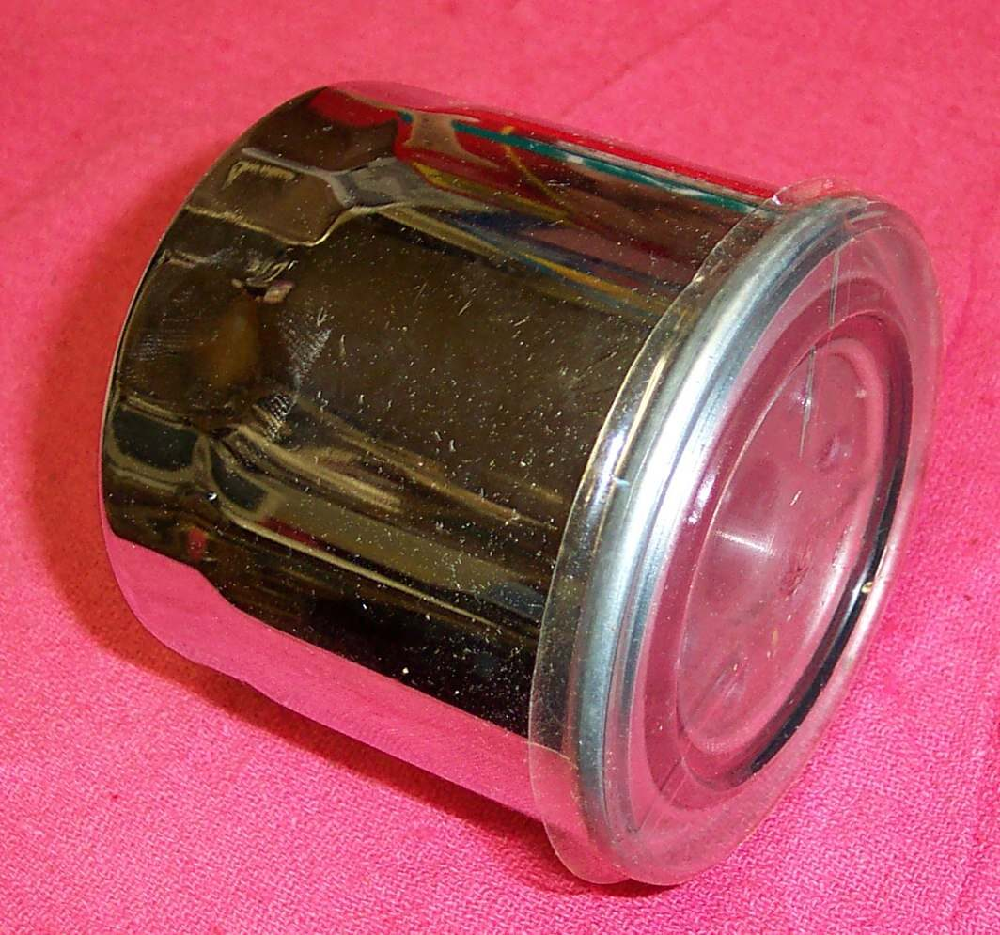
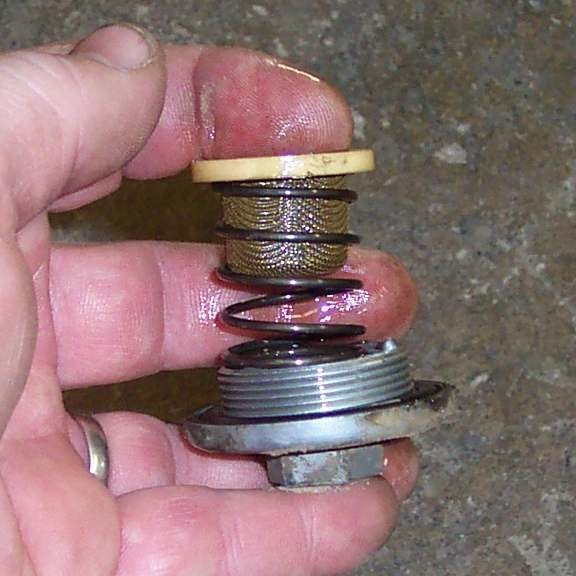

Four types of oil filter are used on motorcycles. Knowing which one the engine has decides the tools, the parts to buy and the care needed at the change.
The four types
| Type | What it looks like | Care at the change |
|---|---|---|
| Spin-on cartridge, outside or inside the engine | Metal can screwed onto the engine, like a car oil filter | Replace the whole filter. See Change a spin-on or paper oil filter |
| Paper or cloth element, inside a cover or a finned housing | Cover held by bolts, or one large hollow bolt | Replace the element, with new O-rings. Fit it the right way round |
| Metal screen, coarse or fine | Mesh on a plug or in a chamber with a cover | Clean and reuse. See Clean the oil screen in the drain plug or filter chamber |
| Centrifugal, in the clutch centre or a separate cup | Cover over a spinning cup or clutch hub | Clean out sludge. See Clean a centrifugal oil filter |
Steps
- Look in the manual or parts list for the filter type and its position.
- Look under and beside the engine. A spin-on filter is on the front or bottom of the engine. Some engines have it inside the oil pan, behind a cover.
- Look for a cover on the engine side held by bolts or one large hollow bolt. This hides a paper element.
- Check the drain plug. On many engines it also holds a coarse screen, which can plug and cut oil to the cylinder head.
- On older small singles, check whether a cover on the clutch side hides a centrifugal filter.
- Buy the right filter and tool before draining the oil. See Oil filter wrench.
Check your work
- The type is confirmed against the manual or parts list.
- The right filter, O-rings and tool are in hand before the work starts.